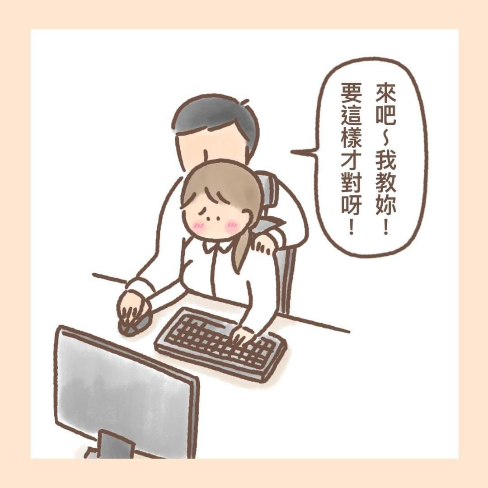

性騷擾的種類
性別騷擾
•這是最廣義的性騷擾。使他人覺得因為性別而被污辱、或歧視的言論，或過度強調男/女性的性徵、性吸引力
•例如：嘲笑別人是飛機場；
「先生，你那方面可能很不行！」
「你們女生就是什麼都做不好！ 」
性挑逗
•包含一切不受歡迎、不合宜或帶有攻擊性的口頭或肢體上的吃豆腐行為。
•例如：公開展示色情圖片、講黃色笑話、或掀裙子、撫摸他人敏感部位、暴露性器，或以文字及言語暗示及下流的動作等。

性賄賂
•要求對方同意性的要求以交換利益(例如：僱用、升遷、加分、通過)條件的要求。
•例如：
老闆說跟他交往就讓你升職。
鄰居伯伯說給我摸一下胸部就給你零用錢。
性威脅
•以威脅的方式（或剝奪對方利益）使對方害怕而發生性行為。
•例如：
男友覺得妳不跟他發生性行為就是不愛他，你害怕兩人因此分手而答應。
性侵害
•不是以服務(如治療、檢查)為目的，或未得已成年的當事人同意，而以任何形式碰觸 其性器官。如：強暴以及任何以性傷害對方的行為。
•至於未成年的青少年，法律上是不賦予性行為同意權的
從性騷擾到性侵害
•性騷擾通常是從一些輕微的碰觸或言語挑逗開始，試試看是否有機會再繼續下去，如果沒有被明顯拒絕或嚴重警告，通常就會再進一步。當事人應該立刻表達出來，因為隱忍並不能解決問題，甚而會使得情況變本加厲地嚴重化，最後招致「性侵害」的遺憾。